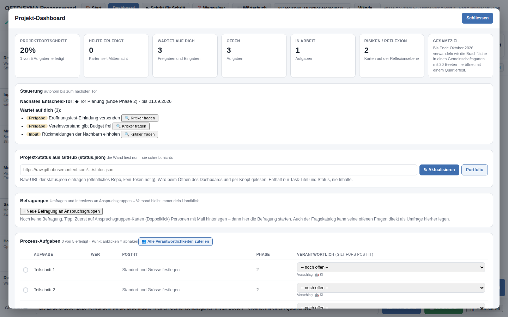

Kennst du das?
So funktioniert die Prozesswand
Drei Schritte – mehr braucht es nicht für den Anfang.
Du schreibst auf, was du erreichen willst – die Wand macht das Ziel mit dir messbar (SMART), mit einfachen Fragen statt Fachsprache.
Sechs KI-Helfer entwerfen Phasen, Aufgaben, Risiken und den Ablauf. Alles erscheint zuerst als Vorschau – übernommen wird nur, was du bestätigst. (Dafür brauchst du zurzeit einen eigenen Anthropic-Schlüssel – das Beispielprojekt geht ohne.)
An jedem Phasenende steht ein Entscheid-Tor. Das Dashboard zeigt dir höchstens drei Dinge, die auf dich warten – nie eine endlose Liste.
Was die Prozesswand kann
Jede Funktion in einem Satz – so einfach, dass es ein Kind bedienen könnte.
Ein Beispiel zum Anfassen: der Quartier-Gemeinschaftsgarten
Kein Schaubild, sondern ein Übungsprojekt – ein Klick, und du stehst selbst darin.

Vier Phasen von «Bedarf klären» bis zum Quartierfest, Karten auf allen Ebenen, ein Entscheid-Tor am 1. September – und ein Dashboard, das dir sagt, was als Nächstes auf dich wartet.
Genau diese Wand kannst du jetzt öffnen und verändern: Karten verschieben, Aufgaben abhaken, das Dashboard erkunden. Ohne Anmeldung, ohne Spuren – beim Neuladen ist alles wieder frisch.
Der Grundkurs in 7 kurzen Videos
Zusammen rund 9 Minuten – mit Sprecherstimme und Untertiteln. Teil 1 reicht für den Start.
Teil 2 · Neues Projekt mit KI (1:12)
Teil 3 · Das Dashboard (1:04)
Teil 4 · Dokumente & Exporte (0:51)
Teil 5 · Aufgaben an die KI (1:03)
Teil 6 · Befragungen (1:46)
Teil 7 · Projekte aus dem Chat (1:10)
Ehrlich gebaut – von einer Person, nicht von einem Konzern
Die Prozesswand ist ein persönliches Projekt von Dölf Rütimann, Schaffhausen – entstanden aus jahrelanger Arbeit mit der Moderationswand und dem OSTO-Systemmodell. Das heisst konkret:
- Kein Tracking, keine Werbung. Die Seite zählt dich nicht, sie verkauft nichts weiter.
- Deine Wände gehören dir. Inhalte werden nur für den Betrieb gespeichert – nie verkauft, nie für Werbung genutzt. Für KI-Antworten geht allein der nötige Text an Anthropic; laut Anbieter wird er standardmässig nicht fürs Training verwendet.
- KI mit Leitplanken. Die KI schlägt vor, du entscheidest. Mails, Käufe und Löschungen brauchen immer dein Ja.
- Nachvollziehbare Methode. Grundlage ist das OSTO-Systemmodell (mehr bei henning4future.com), kombiniert mit der bewährten Arbeitsweise der Moderationswand.
Was kostet die Prozesswand?
Heute gilt: Die Prozesswand selbst ist kostenlos. Nur für die KI-Funktionen brauchst du zurzeit einen eigenen Anthropic-Schlüssel – dessen Nutzung verrechnet Anthropic direkt (typisch wenige Rappen pro Anwendung). Die Preise unten sind geplant – deine Meinung dazu interessiert mich.
Mehrere Wände + Portfolio-Übersicht: CHF 9/Monat (oder CHF 90/Jahr).
Grosse Umfragen + KI-Umfrage mit Nachfragen: CHF 19 pro Umfrage.
Häufige Fragen
Was kostet die Prozesswand wirklich?
Die Prozesswand selbst kostet nichts. Einzig für die KI-Funktionen brauchst du im Moment einen eigenen Anthropic-Schlüssel; dessen Nutzung verrechnet Anthropic direkt (typisch wenige Rappen pro Anwendung). Die geplanten Preise stehen oben, damit du weisst, worauf es hinausläuft. Und wenn es so weit ist: Kündigen geht mit einer einzigen Mail, Daten bleiben deine.
Brauche ich einen eigenen KI-Schlüssel?
Zum Anschauen, für das Beispielprojekt und fürs Planen von Hand: nein. Für die KI-Funktionen (Struktur bauen, Chat, Fragekatalog) brauchst du im Moment einen eigenen Anthropic-Schlüssel – die Wand zeigt dir, wo er eingetragen wird. Ein KI-Start-Guthaben für jedes Konto ist in Arbeit – sobald es bereit ist, steht es hier.
Was passiert mit meinen Daten?
Deine Wände liegen in deinem Konto und werden nur für den Betrieb gespeichert – kein Tracking, keine Werbung, keine Weitergabe. Für KI-Funktionen wird der nötige Text zur Beantwortung an Anthropic geschickt, mehr nicht. Details stehen in der Datenschutzerklärung.
Funktioniert es auf dem Handy?
Anschauen, Dashboard und Abhaken: ja. Zum richtigen Planen ist die Wand aber für grosse Bildschirme gebaut – am Computer oder Tablet arbeitet es sich deutlich besser.
Was ist das OSTO-Systemmodell?
Eine bewährte Denkweise, die ein Projekt als offenes System mit klarer Grenze betrachtet: Was gehört hinein, was wirkt von aussen, was geht in jeder Phase hinein und heraus? Mehr dazu auf Wikipedia.
Probier es einfach aus
Das Beispielprojekt läuft sofort im Browser – ohne Anmeldung, ohne Installation, ohne Spuren.